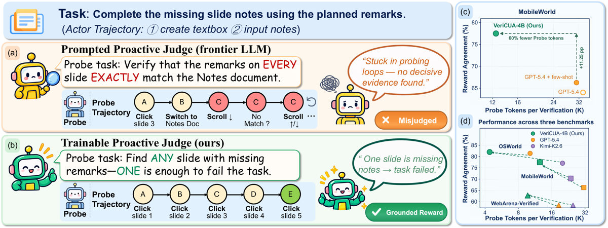
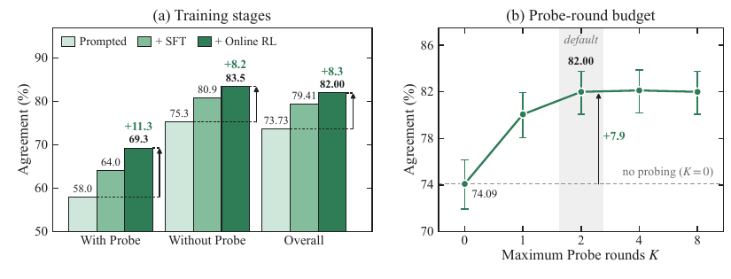
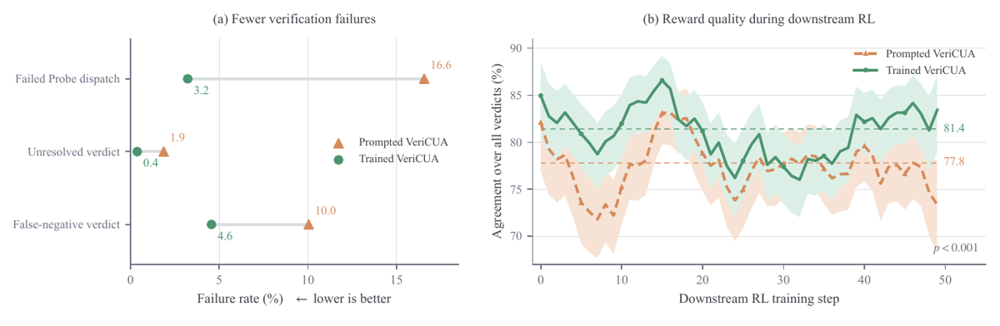

Un reward agent entraîné pour CUA, scindé en deux rôles : un Judge trainable qui formule 3 à 5 critères de succès puis décide quoi faire vérifier et quand s'arrêter, et un Probe gelé qui exécute l'inspection dans l'environnement GUI vivant post-exécution ; le Judge est entraîné par RL en ligne (REINFORCE++) contre le label du validateur exécutable du benchmark, avec un reward qui facture l'usage du Probe.
Claim principal, précisément : sous boucle de vérification identique, prompts identiques et budget identique (K = 2 rounds de Probe), les juges promptés plafonnent à 68,13–69,62 % d'accord macro-moyen de 4B à GPT-5.4 et le few-shot ne déplace la bande que de ≤ 1,02 pt ; un Judge 4B entraîné atteint 74,08 % macro (82,00 / 77,50 / 62,75 sur OSWorld / MobileWorld / WebArena-V), soit +5,36 pt sur GPT-5.4 few-shot avec 47,6–59,8 % de tokens Probe en moins, et transfère sans réentraînement à deux environnements jamais vus [Tab. 1, §3.2].
⚠️ Deux bornes que le papier n'affiche pas au premier plan. (i) Sur les 8,27 pt gagnés sur OSWorld, 5,68 viennent du SFT sur traces Kimi-K2.6 et 2,59 du RL en ligne [Fig. 5a] — le « learns its verification strategy from single attempts » de l'abstract pèse 31 % du gain. (ii) Le « +3,21 pt de task success » est mesuré contre l'Actor initial, pas contre la meilleure source de reward alternative : contre ZeroGUI le delta tombe à +1,78 (All) et +2,70 (OOD) [Tab. 2].
guirl_batch_size: 8 dans guirl_config.yaml, non revendiqué comme la config publiée).scripts/compute_replay_eval_reward_consistency.py du dépôt compte pourtant gt_labels et liste chaque mismatch avec gt et pred.Deux agents, un seul entraîné.
Judge J_φ(x, H^(k)) → (v^(k), C^(k)) [Éq. 1] :
- Observation à k = 0 : ψ(τ) = instruction de tâche + historique textuel des actions de l'Actor + les 3 derniers screenshots (history_n: 3, recoupé dans suites/osworld_judge/judge.yaml).
- Sortie : v ∈ {success, failure, uncertain} + une liste de critères, chacun étiqueté satisfied | violated | unresolved.
- Règle de verdict, conjonctive : success ssi tous les critères sont satisfaits ; failure dès qu'un seul est violé ; uncertain sinon [§2.2]. C'est une clause d'échec, pas une somme pondérée.
- success ou failure termine la vérification. Si uncertain et k < K, seul le sous-ensemble non résolu C_u^(k) part au Probe.
- Le texte des critères est généré à k = 0 et gelé ensuite ; seuls les statuts sont mis à jour [§2.2, confirmé dans judge_prompts.py : « keep the criteria text unchanged »]. ⚠️ Donc la rubrique n'est pas révisée en cours de vérification — bonne propriété — mais elle est inventée par le composant noté, à partir du seul énoncé et de 3 screenshots.
- Température 1,0 ; enable_thinking: true ; strip_history_thinking: true ; max_tokens 24 576 en RL (guirl_config.yaml), 200 000 en éval (judge.yaml).
Probe P(· | C_u^(k); E^(k)) [Éq. 2] :
- Gelé, température 0,0, ≤ 8 192 tokens par requête, ≤ 15 steps GUI par round [App. D, Tab. 7].
- Part de E^(0) = l'environnement terminal de l'Actor ; chaque invocation suivante continue depuis l'état atteint par les actions du Probe précédent.
- Seul e^(k) remonte au Judge ; la trace complète τ_P^(k) non, et chaque invocation repart sans l'historique des rounds précédents — « neither component's context grows with the other's execution length » [§2.2]. C'est la gestion de contexte long : pas de compaction, pas de résumé — un cloisonnement. La trajectoire du Judge reste linéaire (ses propres tours), celle du Probe est remise à zéro à chaque round. ⚠️ Conséquence : le ratio d'importance du Judge n'est jamais calculé sur des tokens de Probe (« context tokens and Probe outputs are excluded » de A_B [§2.4]) — point propre.
- Canal de retour structuré : le Probe ne parle au Judge que par un outil criteria, un critère à la fois. « the judge only sees criteria updates made through the criteria tool call » [App. I]. Un raisonnement non converti en appel d'outil est perdu.
- Garde-fous de prompt uniquement : « Do not perform actions that modify the environment (e.g. saving files, deleting, editing) » (desktop) ; « Never create, edit, delete, send, submit, purchase, or otherwise mutate data » + confinement aux origines WebArena (web) ; « do not make destructive or irreversible changes » (mobile) [App. I]. ⚠️ Aucune application mécanique (pas de montage read-only, pas de whitelist d'actions). Non précisé si une violation est détectée.
- Le label oracle Y_i est enregistré avant toute interaction du Probe [App. G] — c'est la parade correcte au fait que le Probe mute l'état.
Horizon : K = 2 rounds de Probe maximum ⇒ 3 appels Judge au plus. Recoupé dans le code : run_replay_eval.py --max_eval_rounds défaut 3 ; guirl_judge_max_rounds: 3. (La signature run_judge_eval_loop(max_rounds=2) est un défaut de bibliothèque, pas la config évaluée.)
Erreurs et sorties mal formées : 3 tentatives de reparse (JUDGE_PARSE_MAX_RETRIES = 3, recoupé dans evaluator.py) ; au-delà, statut parse_failure. Un échec de round de Probe est attrapé (logger.error("Probe round failed")) et la boucle continue sans évidence, avec un prompt dédié « The probe agent did not find corresponding evidence » [App. I]. ⚠️ Un épisode de vérification sans verdict n'est pas retiré du batch : il est scoré −1,0 (voir §3). C'est un choix, pas un oubli — mais c'est le choix le plus hackable du dispositif.
Infra d'exécution : 16 VM Ubuntu 22.04.3 indépendantes, 1920×1080, 4 vCPU / 4 GiB, QEMU 8.2.10 en émulation TCG sur hôtes ARM64 [App. F]. Reset = ré-exécution depuis snapshot propre.
Tâche : « Complete the missing slide notes using the planned remarks. »
- Judge prompté (GPT-5.4) : check = « Verify that the remarks on EVERY slide EXACTLY match the Notes document » → Probe : click slide 3 → switch to Notes doc → scroll ↓ → « No match ? » → scroll ↑/↓ → boucle → verdict jamais atteint, misjudged.
- Judge entraîné : check = « Find ANY slide with missing remarks — ONE is enough to fail the task » → Probe : click slides 1→5, trouve la diapo vide, stop. Verdict failure.
⚠️ Lecture de conception, pas des auteurs : la stratégie apprise est une chasse au contre-exemple. Elle est asymétrique par construction — réfuter coûte un clic, établir le succès coûte l'exhaustivité. Voir §5 et §9.
Attention : deux rewards à ne pas confondre.
Type : label exécutable Y_i du validateur du benchmark (OSWorld / MobileWorld / WebArena-V), enregistré avant l'interaction du Probe. Aucun LLM-as-judge dans la boucle d'apprentissage. Granularité : outcome, terminal, un scalaire par essai complet.
Barème exact [Tab. 9, App. G] — recoupé ligne à ligne avec compute_reward() dans third_party/slime/guirl/judge/evaluator.py, valeurs identiques :
| Issue | Probe utilisé | Reward |
|---|---|---|
| Correct | non | +1,0 |
| Correct | oui | +0,7 |
| Incorrect | non | −0,7 |
| Incorrect | oui | −0,3 |
uncertain, non parsable, ou métadonnée évaluateur absente |
— | −1,0 |
float(S) >= 1.0). p_i est binaire : 1 si ≥ 1 invocation de Probe, quel que soit le nombre de rounds [App. G]. Donc le reward facture la décision de sonder, pas la longueur d'exécution du Probe gelé — cohérent avec l'intention affichée.uncertain = −1,0, strictement pire qu'un verdict faux (−0,7 sans Probe, −0,3 avec). Le dispositif enseigne donc : mieux vaut se tromper que dire « je ne sais pas ». Dans un domaine où l'incertitude est légitime, c'est une inversion de préférence, pas un détail de calibration.Fiabilité mesurée :
- Métrique de tête = Avg@k = (100/Nk) Σ_i Σ_j 1[Ŷ_ij = Y_i] [Éq. 5, App. A] — exactitude brute, uncertain/error/missing comptés comme faux (confirmé dans compute_replay_eval_reward_consistency.py : « uncertain/error/missing count as mismatch »). « Macro Avg. » = moyenne non pondérée sur les 3 benchmarks, pas une macro sur les classes.
- FP et FN séparés : non, nulle part dans l'éval principale. Un seul chiffre de FN existe, hors Tab. 1 : FNR 10,0 % → 4,6 % (promptée → entraînée) pendant l'Actor RL [Tab. 10]. Aucun FPR, aucune précision, aucun rappel dans tout le papier (vérifié par grep sur full.tex : false positive, precision, recall → 0 occurrence).
- Plafond de bruit : absent. Pas d'accord inter-juges, pas d'accord juge↔humain, pas d'accord inter-annotateurs. L'oracle exécutable est traité comme infaillible — alors que l'intro du papier écrit elle-même « Rule-based rewards are precise but brittle » [§1]. Le screening à 6 ré-exécutions contrôle la stochasticité de l'état terminal, pas la justesse du validateur.
- Reproductibilité du juge : Judge à température 1,0, agrégé en Avg@4 — la variance d'échantillonnage est donc dans la métrique, mais n'est jamais isolée.
Si juge LLM : prompt recopié. Le prompt système du Judge est publié [App. I] et identique dans le dépôt (judge_prompts.py ligne 65). Trois instructions décident du comportement :
« 1. If previous criteria are not provided, produce 3 to 5 criteria. » « 2. If previous criteria are provided, keep the criteria text unchanged. The probe agent has already assessed the status of each criterion — treat the probe's assessment as your default baseline. Only override a status (e.g. downgrade 'success' back to 'uncertain') when you observe clear, direct visual contradiction […]. Do not downgrade to 'uncertain' merely because the evidence is limited, indirect, or ambiguous. » « 4. Do not treat action-history labels like Done, Success, Completed, saved, clicked Save/Submit/OK/Apply as evidence by themselves. »
⚠️ L'instruction 2 est un biais de permissivité câblé dans le prompt : par défaut on reprend le verdict du Probe, et le doute ne peut pas faire redescendre un statut. Combinée au −1,0 sur uncertain, elle pousse mécaniquement vers des verdicts affirmatifs et vers l'acceptation. C'est exactement le mécanisme qui produit des faux positifs — et le FPR est le seul chiffre que le papier ne donne jamais. L'instruction 4 est, à l'inverse, le seul élément anti-hacking du dispositif : elle interdit de croire l'Actor sur parole.
Robustesse : le vérifieur n'a été attaqué nulle part. Aucune politique adverse, aucun mutant, aucun test de délétion, aucune sortie dégénérée, aucune section Limitations. Grep sur full.tex : adversarial, attack, hack, exploit, degenerate, limitation → 0 occurrence. Le dépôt ne contient aucun fichier ni drapeau de ce type (tests/test_replay_reliability.py teste le déterminisme du rejeu, pas l'adversarialité).
r̂_i = 1[VeriCUA(x_i, τ_i, E_i^T) = success] [§2.4] : binaire, le verdict failure et le verdict uncertain donnant tous deux 0. Judge et Probe gelés pendant l'Actor RL. Le code expose un mode binary alternatif (compute_reward(..., reward_mode="binary")) qui rend 0.0 sur uncertain — même convention.
⚠️ Conséquence directe : un épisode sans verdict est scoré 0, pas retiré du groupe GRPO. Un uncertain est indiscernable d'un échec pour l'Actor. Avec un taux d'uncertain non résolu de 0,4 % (entraîné) c'est marginal ici ; sur une tâche juridique longue il ne le serait pas.
Judge : REINFORCE++ à rollout unique [§2.4, Éq. 3–4 ; App. E], implémenté dans Slime.
- Avantage = retour terminal blanchi sur le batch : A_{i,k,t} = (r_i − μ_B)/√(σ²_B + ε), le même scalaire sur tous les tokens actifs du Judge d'une trajectoire [Éq. 3]. Pas de value model, pas de groupe same-state — c'est tout le point : l'état terminal de l'Actor n'est pas reproductible, donc pas de forking d'environnement, un seul essai de vérification par état [§2.4].
- Masque de perte : A_B = tokens Judge nouvellement générés uniquement ; tokens de contexte et sorties de Probe exclus [§2.4].
- Surrogate PPO clippé avec (1−ε_low, 1+ε_high) asymétrique [Éq. 7, App. E] — valeurs de ε_low/ε_high non précisées pour le Judge.
- Hyperparamètres publiés [Tab. 7] : Adam, lr 1e-6, weight decay 0,1, 280 tâches OSWorld, Probe gelé Holo3.1-35B-A3B, K = 2 × 15 steps GUI. Non précisés : nombre de steps RL, taille de batch, KL, température de rollout du Judge, clipping, longueur max de séquence.
- SFT [Tab. 6] : seed 1979 (unique), lr 3e-6, cosine, wd 0,01, batch global effectif 16, ~1 270 exemples, DeepSpeed ZeRO-3 sur 8 GPU.
Actor downstream : GRPO vanilla [Tab. 8] — Qwen3-VL-4B-Thinking, 206 tâches OSWorld single-app, observations screenshot + actions PyAutoGUI, horizon 30 steps, batch 8 tâches × 8 rollouts, clipping PPO (0,20 ; 0,28), KL 0,01 (estimateur low-variance), entropy 0, Adam lr 1e-6, wd 0,1. Durée ≈ 50 steps (lue sur l'axe de la Fig. 7b, 0→49).
Stabilité : rien de cassé n'est rapporté. Pas de courbe de reward d'entraînement, pas de courbe de longueur, pas de courbe d'entropie, ni pour le Judge ni pour l'Actor. La seule dynamique publiée est l'accord par step de la Fig. 7b.
Compute : 8× A800-SXM4 80 GB pour les updates (TP = 8) + 8 GPU pour la génération de rollouts, BF16 ; inférence aussi portée sur Huawei Ascend 910B3 (3 instances Probe × 2 NPU, 2 instances Judge × 1 NPU), vLLM 0.18.0 / vLLM-Ascend 0.18.0, CANN 9.0.0, PyTorch 2.9.0 [App. F]. Heures GPU : non précisées.
Le papier n'en mentionne aucun — ni pour le Judge, ni pour l'Actor. Pas de section Limitations, pas de cas d'échec analysé (la Fig. 6 est un cas de succès). Ce qui est rapporté comme « failure » au Tab. 10 est de la fiabilité d'ingénierie, pas du hacking :
| Comportement | Détection | Correction | Évaluée ? |
|---|---|---|---|
| Probe dispatch échoué (check inexécutable) | taux loggé pendant l'Actor RL | le RL apprend à émettre des checks actionnables | ✓ 16,6 % → 3,2 % (p = 3e-4) [Tab. 10] |
Verdict uncertain non résolu (budget épuisé sans verdict) |
taux loggé | pénalité −1,0 dans le barème | ✓ 1,9 % → 0,4 % [Tab. 10] |
| Scroll/wait sans but, cibles répétées, sondes en cul-de-sac | 4 proxies comportementaux sur 33 cas OSWorld | checks nommant la localisation de l'évidence | ✓ mais n = 33, sans IC, annotateur non précisé [Tab. 3] |
| Sortie non parsable | 3 reparses puis parse_failure |
pénalité −1,0 | partiellement : le taux n'est pas reporté séparément |
⚠️ Ce que le dispositif rend hackable, et que personne n'a testé. Trois canaux, tous créés par la méthode elle-même :
uncertain = −1,0 < verdict faux. Le gradient le plus fort du barème pousse à ne jamais s'abstenir. Un Judge qui transforme ses doutes en verdicts affirmatifs monte son reward sans rien vérifier de plus.unresolved → uncertain → −1,0. La politique optimale est donc de formuler des critères faciles à trancher : exactement « apprendre à ne pas vérifier ce qui est difficile ». Le prompt borne le nombre de critères (3 à 5) mais rien ne borne leur exigence. Jamais nommé dans le papier.failure dès qu'un critère est violé ⇒ réfuter est bon marché ; success exige que tous soient satisfaits, et l'instruction de prompt interdit de redescendre un statut sur évidence « limitée, indirecte ou ambiguë ». En tâche de complétude (« toutes les diapos », « toutes les lignes »), un Judge qui ne trouve pas de contre-exemple en ≤ 15 steps conclut success. Le FNR qui tombe de 10,0 à 4,6 % est compatible avec « le vérifieur est devenu plus permissif » autant qu'avec « il est devenu plus juste » — et c'est le FPR, absent, qui trancherait.⚠️ Crédibilité de l'absence : faible. Un vérifieur appris dont le verdict devient le reward d'une politique optimisée pendant 50 steps GRPO est précisément la configuration où ces canaux s'ouvrent. La Fig. 7b montre que l'accord global ne s'effondre pas sur 50 steps — c'est une information réelle, mais 50 steps est en-deçà des onsets de dégradation observés ailleurs dans ce corpus (100 à 450 steps).
fully_async) n'est pas précisé dans le papier.guirl_env_capacity: 8, guirl_batch_size: 8 dans le dépôt.†).| # | Chiffre (abstract / intro) | Source dans le corps | Verdict |
|---|---|---|---|
| 1 | « prompted Judges ranging from 4B to GPT-5.4 all plateau at 68 %–70 % macro-average agreement » | Tab. 1 : Qwen3-VL-4B prompté 69,58 ; Kimi-K2.6 69,62 / fs 68,60 ; GPT-5.4 68,13 / fs 68,72. §3.2 : « plateau at 68,13 %–69,62 % » | confirmé — mais seulement sur la bande explicitement nommée. Hors bande, le même Tab. 1 donne VAGEN (promptée, 4B, proactive) 63,95 et les prompted 2B/1B 62,16 / 50,51. Le « plateau » est celui des bons juges promptés, pas des juges promptés |
| 2 | intro : « few-shot examples add at most 0.6 points » | Tab. 1 : GPT-5.4 68,13 → 68,72 = +0,59 ; Kimi 69,62 → 68,60 = −1,02. §3.2 reformule : « shift this range by at most 1,02 points » | confirmé, mais formulation unilatérale : le few-shot dégrade Kimi-K2.6 de 1,02 pt et dégrade GPT-5.4 sur OSWorld (81,88 → 81,40). L'abstract ne retient que la borne positive |
| 3 | « surpasses few-shot GPT-5.4 by 5.36 points » | 74,08 − 68,72 = 5,36 [Tab. 1, §3.2] | confirmé (macro-moyenne) |
| 4 | « with 47.6 %–59.8 % fewer Probe tokens » | §3.2 donne un seul point chiffré : OSWorld, « 56,9 % fewer tokens ». Fig. 1(c) annote « 60 % fewer Probe tokens » (MobileWorld). Aucun tableau de tokens Probe dans le papier | introuvable en table — les deux bornes de la plage ne sont lisibles que sur des figures ; 56,9 % est cohérent avec la plage, les extrema ne sont pas vérifiables |
| 5 | « even a 1B VeriCUA exceeds every prompted Judge » | Tab. 1 : VeriCUA-1B macro 71,62 vs max prompté 69,62 (Kimi) | sur-généralisé — vrai en macro-moyenne uniquement. Sur OSWorld, VeriCUA-1B 77,11 < GPT-5.4 promptée 81,88 et < GPT-5.4 fs 81,40. Le papier énonce le claim dans le paragraphe macro, l'abstract retire le qualificatif |
| 6 | « achieves the highest reward agreement across all three benchmarks » | Tab. 1, gras sur les 3 colonnes pour VeriCUA-4B (82,00 / 77,50 / 62,75) | confirmé |
| 7 | « lies on the agreement–cost Pareto frontier among proactive verifiers » | Fig. 4, frontière pointillée, 3 panneaux | confirmé graphiquement ; la restriction « among proactive » est nécessaire et présente — sur MobileWorld, ZeroGUI (passive, 0 token Probe, 73,00) est sur la frontière |
| 8 | « raises task success by 3.21 points overall and 5.40 points on held-out multi-application tasks » | Tab. 2 : All 43,93 → 47,14 = +3,21 ; OOD 17,57 → 22,97 = +5,40 | sur-généralisé — la base est l'Actor initial, pas une autre source de reward. Contre ZeroGUI : +1,78 (All) / +2,70 (OOD). Contre VeriCUA promptée : +1,43 (All) / +2,70 (OOD). Le reward lui-même achète ≈ 45 % du gain affiché ; le reste, c'est « faire du RL » |
| 9 | « A trainable Judge decides what to check and when to stop, while a frozen Probe executes » | §2.2, Tab. 7 ; recoupé dans le dépôt (Probe température 0,0, aucun paramètre entraîné) | confirmé |
| 10 | « Trained only on OSWorld and evaluated without further training on MobileWorld and WebArena-Verified » | Tab. 7 (280 tâches OSWorld), §3.1 | confirmé (le Probe, lui, est spécifique à l'environnement : GUI-Owl-1.5-32B-Think sur mobile [Tab. 5] — transfert du Judge, pas du système entier) |
| 11 | §3.3 : « 73,73 % → 79,41 % après SFT → 82,00 % après online RL, online RL adding 2.59 points » | Fig. 5a | confirmé — et révélateur : 69 % du gain OSWorld vient du SFT sur traces Kimi, 31 % du RL en ligne |
| 12 | §3.3 : « from 74.09 % at K=0 to 82.00 % at K=2 » | Fig. 5b (K = 0, 1, 2, 4, 8) | confirmé ; saturation nette dès K = 2 |
| 13 | §3.3 : « OSWorld agreement stays between 82.00 % and 82.73 % across these Probes » | Tab. 4 + IC Wilson 95 % + tests de proportion (p = 0,5843 / 0,9639 / 0,6158) | confirmé — la plus propre mesure de variance du papier |
| 14 | §3.3 : « directs 61.9 % of Probe actions toward task-relevant evidence vs 47.6 % for GPT-5.4 » | Tab. 3, n = 33 cas OSWorld | confirmé mais sur base étroite : 33 cas, aucun IC, annotateur des proxies non précisé |
| 15 | §3.4 : « agreement 81.4 % vs 77.8 %, FNR 4.6 % vs 10.0 %, probe-attempt 4.28 % vs 5.70 % » | Tab. 10, avec p-values | confirmé |
Bilan 7.0 : aucun chiffre contredit ; 2 sur-généralisations (claims #5 et #8, toutes deux dans l'abstract), 1 introuvable en table (#4), 1 formulation unilatérale (#2). Le gain réel, décapé : +4,50 pt macro sur le juge prompté de même backbone, même boucle, même budget [Tab. 1], et +1,78 pt de Pass@4 sur la meilleure source de reward alternative [Tab. 2].
Trois, toutes propres : stages SFT / RL séparés [Fig. 5a], budget K ∈ {0,1,2,4,8} [Fig. 5b], scale du Probe [Tab. 4], plus 3 backbones de Judge (4B / 2B / 1B) contre leurs versions promptées [Tab. 1].
Le résultat d'ablation le plus utile n'est pas celui que l'abstract met en avant : à K = 0 — zéro appel de Probe, zéro token de coût — le Judge entraîné atteint 74,09 % sur OSWorld [Fig. 5b], contre 73,73 % pour le même backbone prompté à K = 2. Et 74,09 % > les 68,72 % de GPT-5.4 few-shot avec budget complet [Tab. 1]. Autrement dit : la décision « quand s'arrêter » n'est pas ce qui achète le gain sur les juges promptés — c'est le jugement sur screenshots seuls. Les 7,9 pt restants (74,09 → 82,00) viennent bien du Probe. ⚠️ Manque pour clore : le juge prompté à K = 0, jamais mesuré.
Anti-scaling, et c'est la thèse : prompté, 4B (69,58) ≈ Kimi-K2.6 (69,62) ≈ GPT-5.4 (68,13) ; entraîné, 1B (71,62) > 2B (70,78), non monotone. ⚠️ 1B > 2B n'est pas commenté et n'a pas d'IC — sur 614 trajectoires × 4 runs, 0,84 pt d'écart est très probablement du bruit. L'affirmation forte « strategy matters more than scale » tient sur 3 points de backbone sans réplication.
| Case | Verdict | Justification |
|---|---|---|
baselines |
✓ | Le meilleur contrôle du papier : la VeriCUA « promptée » partage backbone, architecture Judge–Probe, prompts, Probe gelé et budget K = 2 — seule la politique de vérification diffère [§3.1]. Côté downstream, les 4 bras partagent Actor initial, tâches, budget de rollouts, objectif GRPO et hyperparamètres, seule la source de reward change [Tab. 8] — c'est un bras-D au sens de 2609.09776, en moins complet |
ablation |
✓ | SFT vs RL isolés [Fig. 5a], budget K balayé sur 5 valeurs [Fig. 5b], scale du Probe balayée avec IC [Tab. 4], 3 backbones [Tab. 1]. La contribution du RL en ligne est chiffrée séparément : +2,59 |
variance |
✗ | IC Wilson 95 % et tests de proportion existent — mais seulement sur le Tab. 4 et la Fig. 7b. Le Tab. 1 (claim de tête) n'a aucun IC, le Tab. 2 (Pass@4) non plus, et chaque condition downstream est un seul run d'Actor RL. Un seed unique est publié (1979, SFT) ; aucun seed de RL. L'inversion 1B > 2B n'est ni testée ni commentée |
coherence |
✓ | Aucun chiffre contredit, aucun manquant dans le corps hors #4. Mais 2 sur-généralisations dans l'abstract (#5 macro-seul, #8 base = Actor initial) et une plage de tokens non tabulée |
eval |
✗ | Les contrôles de contamination sont excellents (labels cachés, screening à 6 ré-exécutions + pHash > 0,95, ré-exécution isolée par essai, train/éval disjoints). Mais la métrique de tête est une exactitude brute sur un jeu dont la balance de classes n'est jamais reportée, sans aucune baseline triviale (toujours-failure / toujours-success) : rien dans le papier n'exclut que le « plateau 68–70 % » soit proche de la classe majoritaire. Aucun plafond de bruit sous aucune de ses trois formes. Et 3 des 5 Actors d'éval appartiennent au pool d'Actors d'entraînement |
repro |
✓ | Dépôt vérifié sur son contenu (pas seulement son code HTTP) : compute_reward() reproduit le Tab. 9 à la valeur près, judge_prompts.py reproduit l’App. I à la phrase près, --max_eval_rounds par défaut 3 confirme K = 2, les 3 baselines passives et le fork Slime d'entraînement sont présents, OSWorld complet est vendorisé. Manquent : checkpoints (« will be released »), traces SFT, et les 614 trajectoires annotées — les chiffres du Tab. 1 ne sont donc pas rejouables en l'état |
evidence : 4/6 — manquant : variance, eval.
Plausible mais fragile — et sous-évalué sur la dimension qui compte pour nous.
Ce qui est solide : le gain d'accord à architecture, prompts et budget appariés (+4,50 / +8,62 / +21,11 pt selon le backbone), le transfert zero-shot du Judge, l'insensibilité à la taille du Probe (la seule mesure du papier avec IC et tests), la correspondance exacte code↔papier sur le mécanisme, et le fait rare d'un suivi d'accord par checkpoint pendant l'Actor RL.
Ce qui est fragile : un seul run par condition downstream et aucun IC sur la table de tête ; 69 % du gain OSWorld imputable au SFT sur Kimi, pas au RL ; les deux sur-généralisations de l'abstract.
Ce qui manque et qui est disqualifiant pour un reward juridique : aucun FPR, aucun plafond de bruit, aucune balance de classes, aucune baseline triviale, aucune attaque du vérifieur, aucune section Limitations — pendant que le barème (uncertain = −1,0, strictement pire qu'un faux verdict) et le prompt (« do not downgrade to 'uncertain' merely because the evidence is limited ») poussent tous deux dans la direction permissive. Le FNR qui tombe de 10,0 à 4,6 % est exactement la signature attendue d'un vérifieur plus permissif comme d'un vérifieur plus juste, et le papier ne publie pas le chiffre qui les distingue.

Ce qu'il faut voir : la stratégie apprise, en une ligne de texte. Le check prompté est « Verify that the remarks on EVERY slide EXACTLY match the Notes document » → le Probe boucle (click, switch, scroll ↓, « No match ? », scroll ↑/↓, …) et ne rend jamais de verdict. Le check appris est « Find ANY slide with missing remarks — ONE is enough to fail the task » → 5 clics, stop, verdict. C'est une chasse au contre-exemple, et elle est asymétrique : elle rend la réfutation bon marché et laisse l'établissement du succès sans procédure. Panneau (c) : sur MobileWorld, +11,25 pt pour « 60 % fewer Probe tokens » — la seule lecture des bornes 47,6–59,8 % de l'abstract (aucun tableau de tokens dans le papier).

Ce qu'il faut voir : (a) le gain OSWorld de 73,73 → 82,00 se décompose en +5,68 de SFT sur traces Kimi-K2.6 et +2,59 de RL en ligne — l'abstract vend le second. Et l'accord avec Probe (69,3 %) reste très en-dessous de l'accord sans Probe (83,5 %) : les cas qui déclenchent une sonde sont les cas durs, et ils le restent. (b) le résultat que l'abstract ne met pas en avant : à K = 0, zéro appel de Probe, zéro token, le Judge entraîné fait 74,09 % — déjà au-dessus des 68,72 % de GPT-5.4 few-shot à budget complet. Saturation à K = 2 (82,00), rien à gagner à K = 4 ou 8. Donc l'apport n'est pas « dépenser mieux son budget » : c'est d'abord mieux juger sur screenshots seuls, puis +7,9 pt d'évidence.

Ce qu'il faut voir : le seul régime qui m'intéresse vraiment, et sa limite. (b) est bien un suivi par checkpoint de la fiabilité du vérifieur pendant qu'une politique s'optimise contre lui — entraîné ≈ 81,4 % de moyenne contre 77,8 % pour la version promptée, avance de 4,2 pt en première moitié et 3,2 pt en seconde, pas d'effondrement visible. Mais : l'axe s'arrête au step 49, l'ordonnée est l'accord global (jamais FP et FN par step), et le seul FN publié (4,6 % contre 10,0 %) est un agrégat de run, pas une courbe. Le panneau (a) n'est que de la fiabilité d'ingénierie : dispatch de Probe échoué 16,6 → 3,2 %, uncertain non résolu 1,9 → 0,4 %. Et la courbe promptée chute à ~73,5 % au dernier step avec une bande très large — sans FPR, on ne sait pas si c'est du bruit ou le début de ce qu'on cherche.
| Ingrédient | Choix du papier | Équivalent juridique | Transfert | Ce qui manque |
|---|---|---|---|---|
| Source des tâches | 280 tâches OSWorld existantes + 4 Actors gelés produisant les états terminaux ; aucune tâche créée | Dossiers réels / mémos produits par un pool de politiques gelées, états « terminaux » = livrable + trace de recherche | adaptable | Rien dans le papier ne crée de tâches. Et l'analogue GUI de « l'état terminal non reproductible » n'existe pas en droit : un livrable textuel est rejouable — la contrainte single-attempt qui justifie tout le design tombe |
| Vérifieur | Judge trainable (3–5 critères, statuts satisfied/violated/unresolved, verdict conjonctif) + Probe gelé en lecture seule ; entraîné contre le validateur exécutable du benchmark |
Juge appris qui décide quels points de droit vérifier + outil de recherche gelé (Westlaw/Lexis, base jurisprudentielle) qui rapporte des extraits | non, tel quel · adaptable sur la seule architecture | Le signal d'apprentissage n'existe pas. Pas de Y_i exécutable en droit. Sans oracle exogène, la case (i) du papier devient la case (ii) ou (iii), et on perd la seule raison pour laquelle ce papier est défendable |
| Harness / outils | Judge ne voit que l'énoncé + historique d'actions + 3 screenshots ; Probe ≤ 15 steps GUI, ≤ 8 192 tokens, température 0,0 ; seul le canal criteria remonte au Judge, la trace de Probe est jetée |
Juge ne voit que la question + le livrable ; vérificateur de citations ≤ N requêtes, remonte un statut par point et un extrait source | direct | Le cloisonnement Judge/Probe est la meilleure idée transférable du papier (contextes bornés, coût séparable, Probe échangeable sans réentraînement). Mais le « read-only » du Probe est un garde-fou de prompt, pas un sandbox — inacceptable sur un outil qui lit du dossier client |
| Algo | REINFORCE++ à rollout unique, retour terminal blanchi sur le batch (pas de groupe same-state), avantage identique sur tous les tokens Judge, tokens de Probe exclus de la perte | GRPO classique sur groupe same-question suffit : un mémo juridique est rejouable | non | Le normalisateur cross-state est une réponse à une contrainte qu'on n'a pas. À ne pas importer |
| Curriculum | Aucun | — | n.a. | — |
| Anti-hacking | Une seule règle, dans le prompt : « Do not treat action-history labels like Done, Success, Completed […] as evidence by themselves » | « Ne jamais créditer une affirmation de complétude de l'agent ; exiger la source » | direct, et à copier mot pour mot | Tout le reste est absent : pas de test de délétion, pas de politique adverse, pas de mutant, pas de livrable tronqué, pas de FPR. Et trois canaux de hacking créés par la méthode (§5) ne sont même pas nommés |
Y_i est le validateur exécutable d'OSWorld. Retirez-le, la méthode n'a plus de signal. Non transférable sans substitut exogène (panel d'experts, examen hors boucle).criteria, un critère à la fois, avec son screenshot de preuve attaché, est la primitive exacte d'un vérificateur de citations. À copier.ρ-audit et les bras à budget de labels apparié ne sont pas ici.failure dès un critère violé ⇒ réfuter est bon marché. success exige l'exhaustivité ⇒ un Judge qui n'a pas trouvé de contre-exemple en ≤ 15 steps conclut success. Le prompt lui interdit de redescendre un statut sur évidence « limitée, indirecte ou ambiguë ». Et le barème punit l'abstention plus qu'un verdict faux (−1,0 contre −0,7 / −0,3). Sur une tâche de complétude, c'est une machine à faux positifs sur l'omission.uncertain donc à −1,0, la pire case du barème. La politique optimale consiste à formuler des critères faciles à trancher. Le prompt borne leur nombre (3 à 5), rien ne borne leur exigence. Aucune métrique du papier ne verrait cette dérive : l'accord resterait haut, la couverture s'effondrerait sans signature. Le Tab. 3 (« direct-evidence probes ») mesure l'efficacité de la recherche, pas la difficulté de ce qui est cherché. La seule mesure qui l'attraperait — la distribution de difficulté des critères émis, ou une checklist d'items attendus posée hors boucle — n'existe pas.La séparation stricte entre « qui décide ce qu'on vérifie » et « qui exécute la vérification », avec l'exécutant gelé. Trois propriétés se paient d'un coup : (i) toute différence de résultat est imputable au seul composant entraîné [§2.2] ; (ii) l'exécutant est échangeable sans réentraînement — 35B-A3B → 4B sans perte mesurable, p ≥ 0,58 [Tab. 4], et un Probe différent par environnement [Tab. 5] ; (iii) les contextes ne se contaminent pas, donc le coût de chaque rôle est budgétable séparément. En droit : un Judge qui décide quels points vérifier, des vérificateurs gelés par juridiction et par type de source (citations, dates de vigueur, interprétation), un canal de retour structuré à un point par appel. Cette architecture est utile même si on n'entraîne jamais le Judge.
À ne pas transposer : le barème (abstention punie plus qu'une erreur), le normalisateur cross-state (on n'a pas la contrainte single-attempt), et le fait d'entraîner le Judge contre un oracle qu'on n'a pas.
Le FPR manquant, sur leur propre dispositif, en delta. Rejouer l'Actor RL de 50 steps du papier avec les deux rewards (promptée, entraînée), et logger à chaque checkpoint FPR et FNR séparément, avec leurs dénominateurs distincts (FP / nb de vraies failure, FN / nb de vrais success), plus la balance de classes et la baseline toujours-failure. Tout est disponible : le dépôt contient la boucle, le barème et les baselines ; compute_replay_eval_reward_consistency.py compte déjà gt_labels et liste chaque mismatch avec son gt et son pred — la matrice de confusion est à une boucle for près. Ajouter un test de délétion apparié à la 2610.02824 : sur des trajectoires jugées success, annuler l'effet requis (restaurer le fichier à son état initial, vider la note de diapo) sans toucher à ce qui est génériquement présent, et re-juger.
Coût : aucun entraînement nouveau pour les deux premiers volets (relecture de logs + 1 run de 50 steps), ~quelques centaines de ré-exécutions VM pour le test de délétion.
« Quel est notre Y_i ? » — et, s'il n'existe pas, refuser d'entraîner le vérifieur. Ce papier n'est défendable que parce que son signal d'apprentissage est un validateur exécutable extérieur, statique, et enregistré avant toute action du vérifieur ; il entraîne Judge puis Actor séquentiellement, chacun contre une cible figée. Si notre vérifieur juridique doit apprendre contre l'accord d'un juge plus fort ou contre la performance de la politique qu'il note, nous ne sommes plus dans ce papier : nous sommes dans les 12 cellules sur 12 de dégradation.
Et la question subsidiaire, qui décide du design : « qui écrit la checklist ? » Ici, le composant noté écrit lui-même les 3 à 5 critères qu'il devra résoudre, avec une pénalité maximale sur l'irrésolu. Chez nous, la liste des points attendus doit venir d'un troisième rôle hors boucle RL — une file de revue experte — et le vérifieur ne doit décider que de l'ordre et du budget de vérification, jamais du périmètre.
Lecture du code avant les tableaux, conformément au protocole. Quatre vérifications :
compute_reward() dans third_party/slime/guirl/judge/evaluator.py reproduit le Tab. 9 à la valeur près (+1,0 / +0,7 / −0,7 / −0,3 / −1,0, plus parse_failure → −1.0). Le mode binary alternatif existe et correspond bien au reward downstream de §2.4. --max_eval_rounds par défaut 3 confirme K = 2. Rien d'éteint..tex : src/sections/*.tex ne contient aucun bloc commenté (grep sur ^% et sur % hors \% : 0 ligne). Rien n'a été coupé hors du PDF.scripts/compute_replay_eval_reward_consistency.py calcule et sérialise gt_labels (la balance de classes), labels (la distribution des prédictions) et la liste complète des mismatches avec gt et pred par instance. ⚠️ Aucun de ces trois n'apparaît dans le papier : ni balance de classes, ni baseline majoritaire, ni matrice de confusion. Le même fichier commente sa propre métrique : « uncertain/error/missing count as mismatch » — ce que l'App. A ne dit pas explicitement.Un seul écart papier↔code relevé, et il est bénin : la signature run_judge_eval_loop(max_rounds=2) est un défaut de bibliothèque (1 round de Probe), tandis que les deux chemins réellement configurés (run_replay_eval.py --max_eval_rounds 3, guirl_judge_max_rounds: 3) donnent bien K = 2.